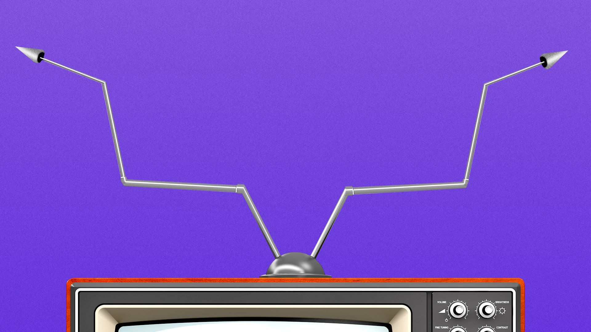

Privacy laws push online ads beyond tracking
Roku on Monday announced that it is acquiring Nielsen's advanced TV advertising division as it works to help traditional television ad dollars migrate more quickly to streaming.
Why it matters: The deal will give Roku, the top smart TV operating system in the U.S., access to the technology it needs to help grow the digital TV advertising landscape broadly.
Posted On: 2021-03-01T00:00:00
Posted By: Sara Fischer
Last year was the worst in history for cord-cutting, according to a new analysis out Tuesday from MoffettNathanson.
The state of play: Pay-TV lost 6 million subscribing households in 2020, 'with total subscriptions falling by 7.3% over the course of the year, and with penetration dropping to a level not seen in nearly thirty years.'
Posted On: 2021-03-02T00:00:00
Posted By: Sara Fischer
Colorado officials are taking a leading role in the efforts to challenge Big Tech, both in Congress and the courts.
What's happening: The attention to the issue is bipartisan and the proposed solutions overlap.
Posted On: 2021-03-02T00:00:00
Posted By: John Frank

Content Date: 2021-03-01
Download Date: 2021-05-15
Document ID: L0C04CG86